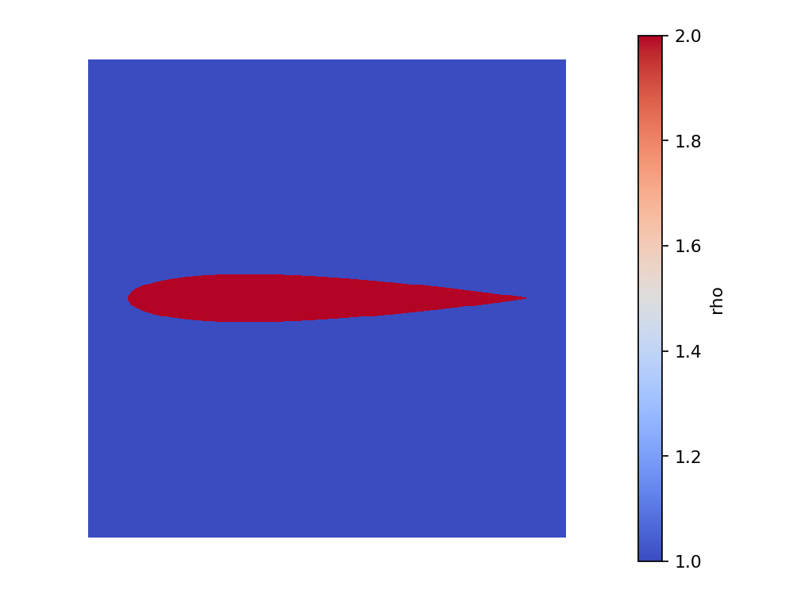
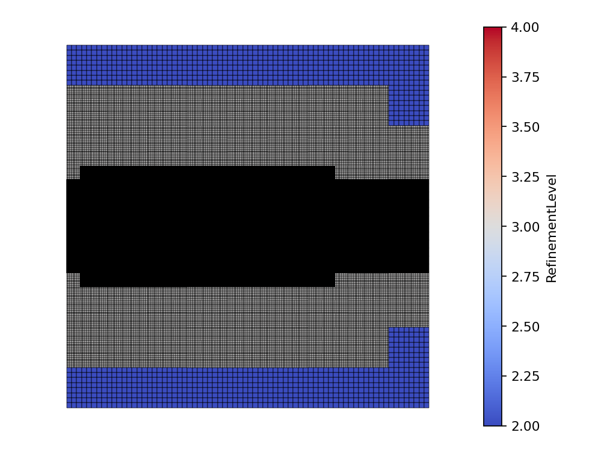
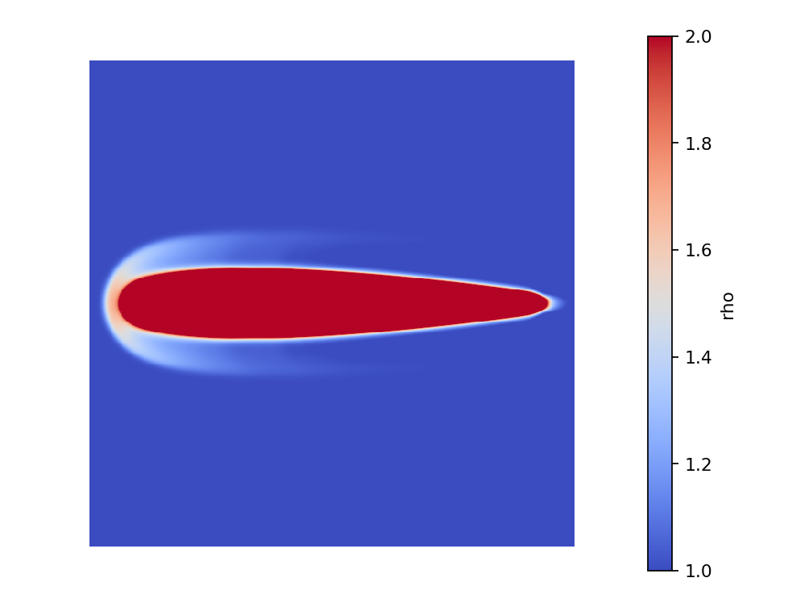

|
Peano
|
|
Peano
|
In this tutorial we change the numerical scheme. Instead of ADER-DG we use a Finite Volumes (FV) solver - a robust, shock-capturing method that copes well with the strong gradients of compressible flow. The configuration and implementation are provided as a worked example; read through them and then experiment. The notebook is tutorials/03_euler/Euler.ipynb with its implementation in FVSolver.cpp.
We simulate air flowing past a symmetric NACA 0012 airfoil and watch a bow shock form in front of it.
The compressible Euler equations conserve density \(\rho\), momentum \(\rho \mathbf{u}\) and total energy \(E\):
\( \begin{equation*} \frac{\partial}{\partial t}\left( \begin{array}{l} \rho \\ \rho u_1 \\ \rho u_2 \\ E \end{array} \right) + \nabla \cdot \begin{pmatrix} \rho u_1 & \rho u_2\\ \rho u_1^2 + p & \rho u_1 u_2 \\ \rho u_2 u_1 & \rho u_2^2 + p \\ (E + p) u_1 & (E + p) u_2 \end{pmatrix} = \vec{0} \end{equation*} \)
For an ideal gas the pressure is \(p = (\gamma - 1)\big(E - \frac{1}{2}\rho(u_1^2 + u_2^2)\big)\) with \(\gamma = 1.4\) (dry air), and the sound speed is \(c = \sqrt{\gamma p/\rho}\). The eigenvalues in normal direction \(n\) are \(u_n - c\), \(u_n\) and \(u_n + c\). In code the conserved state stores density, the two momenta and the energy - not the velocities - so divide by \(\rho\) wherever the formulae use \(u\).
The airfoil sits in a wide \(120 \times 120\) channel. Where the mesh is refined is chosen at run time: we pass -lmin 2 -lmax 4, so the domain is covered by a coarse level-2 grid and ExaHyPE may refine down to level 4 around the airfoil. Each refinement splits a cell into \(3 \times 3\), so level 4 is \(3^2 = 9\) times finer per direction than level 2. As with the refinement of Part 2, the refined region here is static - a fixed band around the airfoil. We create a Godunov-type Finite Volumes solver named FVSolver:
my_project = exahype2.Project(
namespace = ["tutorials", "exahype2", "euler"],
project_name = "Airfoil",
executable = "Airfoil",
dimensions = 2,
size = [120.0, 120.0],
offset = [-10.0, -60.0],
periodic_bc = [False, False],
)
fv_solver = exahype2.solvers.fv.godunov.GlobalAdaptiveTimeStep(
name = "FVSolver",
patch_size = 8,
time_step_relaxation = 0.5,
unknowns = {"rho": 1, "j": 2, "E": 1},
auxiliary_variables = {},
)
The parameter patch_size controls how many finite volumes are grouped into one patch that is updated together. With patch_size = 8 each patch is an \(8 \times 8\) block of cells. Alongside the usual PDE terms we register a refinement criterion**: setting it to User_Defined_Implementation means we write it ourselves in FVSolver.cpp, where it asks for Refine near the airfoil and Keep elsewhere - a static refined band that hugs the airfoil while the far field stays coarse.
fv_solver.set_implementation(
initial_conditions = exahype2.solvers.PDETerms.User_Defined_Implementation,
boundary_conditions = exahype2.solvers.PDETerms.User_Defined_Implementation,
refinement_criterion = exahype2.solvers.PDETerms.User_Defined_Implementation,
flux = exahype2.solvers.PDETerms.User_Defined_Implementation,
max_eigenvalue = exahype2.solvers.PDETerms.User_Defined_Implementation,
)
my_project.add_solver(fv_solver)
The project is built exactly as before, registering FVSolver.cpp.
FVSolver.cpp holds the PDE terms. The conserved variables \((\rho, \rho u_1, \rho u_2, E)\) are addressed through the generated Shortcuts enum (Shortcuts::rho, Shortcuts::j + 0/1, Shortcuts::E). The boundaryConditions impose a fixed inflow state on the left face and outflow (copy the inside state) elsewhere. The initialCondition places a dense gas blob ( \(\rho = 1000\)) inside the symmetric NACA 0012 contour \(y_t(x)\) (airfoilSymmetric) against a uniform low-density free stream ( \(\rho = 1\)). The refinementCriterion drives the static AMR: it inspects only a patch's position (never Q, which is invalid during grid construction) and returns Refine within RefinementMargin of the NACA contour, so the refined band is fixed for the whole run. This is a deliberately simplified setup that produces a recognisable bow-shock picture; it is not a validated aerodynamics benchmark.
Finite Volumes are explicit, so this airfoil run is the heaviest of these tutorials. We pass -lmin 2 -lmax 4 so the background grid is level 2 and the solver refines to level 4 around the airfoil:
export OMP_NUM_THREADS=4 ./Airfoil -et 10.0 -ns 20 -lmin 2 -lmax 4
and plot the density. The dense blob inside the contour saturates the colour scale, so pass clim=(1, 2) to bring out the surrounding flow:
from postprocessing import render_solution
render_solution.show_solution("FVSolver", field="rho", clim=(1, 2))
The initial conditions should look like this:

Plotting the RefinementLevel field shows the static mesh refinement: a fine level-4 band hugging the airfoil (and a short wake) against the coarse level-2 far field, with a level-3 transition in between (the 3:1 balancing that ExaHyPE enforces between neighbouring resolutions):

A curved bow shock builds up in front of the airfoil where the incoming flow is compressed:

RefinementLevel field with the dropdown to see the refined band hugging the airfoil (level 4) against the coarse far field (level 2).j or energy E).RefinementMargin in refinementCriterion, or push the near-airfoil resolution with -lmax 5 and rebuild.boundaryConditions (e.g. a faster stream) and rebuild.In Part 4 - A 2D Euler Shock with a-posteriori Limiting you will combine the two schemes: an a-posteriori limiter that runs the high-order ADER-DG scheme everywhere but falls back to robust Finite Volumes in the troubled cells around a shock.